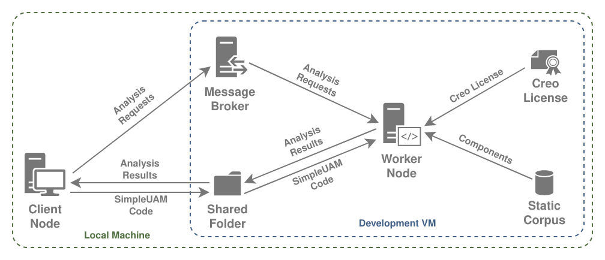

SimpleUAM Installation Guide¶
Info
We would appreciate assistance in making this guide better. Any notes on issues with the install process, lack of clarity in wording, or other improvements would be appreciated.

The core goal of SimpleUAM is allow users to set up a service for processing requests to analyze UAM and UAV designs. Client nodes, such as optimizers or search tools, should be able to queue requests for distribution to worker nodes as they become available. The results of those analyses, packaged as zip files, should then be made available to the clients as they're completed.
In order to form a complete SimpleUAM service some core requirements need to be met:
- There needs to be a configured, running worker node to run analyses.
- Each worker node needs to have a Creo license, either through a node-locked license or a connection to a Creo license server.
- Each worker node needs to have access to an engineering corpus, either through a graph database holding all the data or through a static corpus file which has the same information.
- Each worker has to have access to results storage, a folder on the local file system or a network drive, where zip files with results from each analysis will be placed.
- There must be a message broker which workers can connect to in order to retrieve open analysis requests.
- Client nodes should be able to access the results store to get the archives with the analysis results.
With those requirements met, a client node can then send requests to the message broker and watch the results store for their completed analyses.
Choosing a Service Topology¶
It's possible to distribute SimpleUAM components between multiple machines in numerous ways that meet the given requirements. Picking a topology, specifically the components that go on each individual machine, tells you which installation steps are needed for that machine.
We'll look at two example topologies, one I use for (semi)local development work and one for a potential production system.

This development setup has a local machine and a single worker. The local machine is set up so it can run a SimpleUAM client and so that any code shared with a worker node can be edited in whatever manner the user is comfortable with. The worker node then has all the other necessary components of the service, including broker, license, and corpus.
The structure is a broad guideline and can be tweaked as needed. For instance, if you're running windows you can just run all the components on your local machine and use a stub message broker that will run analysis requests as blocking calls.

The production service has significantly more going on. There are one or more clients producing analysis requests, multiple workers processing them, a Creo license server, a message broker, and a results server.
Other topologies are also viable, for instance running a central graph database for all the workers to share instead of relying on a local, static corpus.
The important part is knowing what components you want on each machine.
Command Line Interfaces¶
All the command line scripts SimpleUAM provides are made using Invoke and evaluated within a PDM administered python environment.
This means that all the SimpleUAM provided commands must be run from
<repo-root> and have this format:
pdm run <command>
All the core SimpleUAM commands suam-config, setup-win, craidl,
d2c-workspace, and d2c-client will print a help message when run without
arguments.
In their base form these commands are safe and will never make change to your
system.
The help messages also provide a list of subcommands that do perform
various tasks.
These subcommands are run with:
pdm run <command> <sub-command> [ARGS]
All of these subcommands come with detailed help information that can be accessed with:
pdm run <command> <sub-command> --help
These help messages are worth checking for available options and notes.
Configuration¶
SimpleUAM uses an internal configuration system based on OmegaConf. It reads YAML files in a platform specific directory for settings that are used throughout the system. While you can find a more detailed breakdown of the system here, this is a quick overview.
Once the SimpleUAM project is installed (in General Setup) you can run the following command to find the config file directory:
pdm run suam-config dir
Files placed there will be loaded when most SimpleUAM code is started up. The configuration is immutable for the runtime of a program and changes will require a restart to register.
You can get a printout of the current configuration state with the following:
pdm run suam-config print --all
Sample Output of pdm run suam-config print --all
### paths.conf.yaml ###
config_directory: /etc/xdg/xdg-budgie-desktop/SimpleUAM/config
cache_directory: /usr/share/budgie-desktop/SimpleUAM/cache
log_directory: /home/rkr/.cache/SimpleUAM/log
work_directory: /usr/share/budgie-desktop/SimpleUAM
data_directory: /usr/share/budgie-desktop/SimpleUAM/data
### win_setup.conf.yaml ###
global_dep_packages:
- checksum
- wget
- 7zip
broker_dep_packages:
- rabbitmq
worker_dep_packages:
- rsync
worker_pip_packages:
- psutil
- numpy
license_dep_packages: []
graph_dep_packages:
- openjdk11
qol_packages:
- firefox
- notepadplusplus
- foxitreader
- tess
- freecad
### craidl.conf.yaml ###
example_dir: ${path:data_directory}/craidl_examples
stub_server:
cache_dir: ${path:cache_directory}/corpus_stub_cache
server_dir: ${path:data_directory}/corpus_stub_server
graphml_corpus: ${path:data_directory}/corpus_stub.graphml
host: localhost
port: 8182
read_only: false
server_host: ${stub_server.host}
server_port: ${stub_server.port}
static_corpus: ${path:data_directory}/corpus_static_dump.json
static_corpus_cache: ${path:cache_directory}/static_corpus_cache
use_static_corpus: true
### d2c_workspace.conf.yaml ###
workspace_subdir_pattern: workspace_{}
reference_subdir: reference_workspace
assets_subdir: assets
locks_subdir: workspace_locks
results_dir: ${workspaces_dir}/results
results:
max_count: -1
min_staletime: 3600
metadata_file: metadata.json
log_file: log.json
max_workspaces: 4
workspaces_dir: ${path:work_directory}/d2c_workspaces
cache_dir: ${path:cache_directory}/d2c_workspaces
exclude:
- .git
exclude_from: []
result_exclude:
- .git
result_exclude_from: []
### d2c_worker.conf.yaml ###
broker:
protocol: amqp
host: 127.0.0.1
port: 5672
db: ''
url: ${.protocol}://${.host}:${.port}${.db}
backend:
enabled: false
protocol: redis
host: 127.0.0.1
port: 6379
db: '0'
url: ${.protocol}://${.host}:${.port}/${.db}
max_processes: ${d2c_workspace:max_workspaces}
max_threads: 1
shutdown_timeout: 600000
skip_logging: false
If you want to see the full expanded version of the configs, with
all the interpolations
resolved, add the --resolved flag.
Sample Output of pdm run suam-config print --all --resolved
### paths.conf.yaml ###
config_directory: /etc/xdg/xdg-budgie-desktop/SimpleUAM/config
cache_directory: /usr/share/budgie-desktop/SimpleUAM/cache
log_directory: /home/rkr/.cache/SimpleUAM/log
work_directory: /usr/share/budgie-desktop/SimpleUAM
data_directory: /usr/share/budgie-desktop/SimpleUAM/data
### win_setup.conf.yaml ###
global_dep_packages:
- checksum
- wget
- 7zip
broker_dep_packages:
- rabbitmq
worker_dep_packages:
- rsync
worker_pip_packages:
- psutil
- numpy
license_dep_packages: []
graph_dep_packages:
- openjdk11
qol_packages:
- firefox
- notepadplusplus
- foxitreader
- tess
- freecad
### craidl.conf.yaml ###
example_dir: /usr/share/budgie-desktop/SimpleUAM/data/craidl_examples
stub_server:
cache_dir: /usr/share/budgie-desktop/SimpleUAM/cache/corpus_stub_cache
server_dir: /usr/share/budgie-desktop/SimpleUAM/data/corpus_stub_server
graphml_corpus: /usr/share/budgie-desktop/SimpleUAM/data/corpus_stub.graphml
host: localhost
port: 8182
read_only: false
server_host: localhost
server_port: 8182
static_corpus: /usr/share/budgie-desktop/SimpleUAM/data/corpus_static_dump.json
static_corpus_cache: /usr/share/budgie-desktop/SimpleUAM/cache/static_corpus_cache
use_static_corpus: true
### d2c_workspace.conf.yaml ###
workspace_subdir_pattern: workspace_{}
reference_subdir: reference_workspace
assets_subdir: assets
locks_subdir: workspace_locks
results_dir: /usr/share/budgie-desktop/SimpleUAM/d2c_workspaces/results
results:
max_count: -1
min_staletime: 3600
metadata_file: metadata.json
log_file: log.json
max_workspaces: 4
workspaces_dir: /usr/share/budgie-desktop/SimpleUAM/d2c_workspaces
cache_dir: /usr/share/budgie-desktop/SimpleUAM/cache/d2c_workspaces
exclude:
- .git
exclude_from: []
result_exclude:
- .git
result_exclude_from: []
### d2c_worker.conf.yaml ###
broker:
protocol: amqp
host: 127.0.0.1
port: 5672
db: ''
url: amqp://127.0.0.1:5672
backend:
enabled: false
protocol: redis
host: 127.0.0.1
port: 6379
db: '0'
url: redis://127.0.0.1:6379/0
max_processes: 4
max_threads: 1
shutdown_timeout: 600000
skip_logging: false
You can also use the write subcommand to write sample config files out to
the appropriate locations. Run the following for more info:
pdm run suam-config write --help
Config files can be partial and do not need to define every possible key. Keys that are missing will just use their default values.
Overriding Configuration Fields.
Consider the following defaults for example.conf.yaml:
### example.conf.yaml defaults ###
subsection:
subfield-1: 'default'
subfield-2: 'default'
field-1: 'default'
field-2: 'default'
example.conf.yaml actually on disk:
### example.conf.yaml defaults ###
subsection:
subfield-2: 'modified'
field-1: 'modifed'
example.conf.yaml as seen by the application
would be:
### example.conf.yaml defaults ###
subsection:
subfield-1: 'default'
subfield-2: 'modified'
field-1: 'modified'
field-2: 'default'
When describing keys in a config file, we'll use dot notation.
Config File Dot Notation
Consider the following config file:
subsection:
subfield-1: 'sub-1'
subfield-2: 'sub-2'
field-1: 'fld-1'
field-2: 'fld-2'
field-1 would have value 'fld-1' and subsection.subfield-1 would
have value 'sub-1'
Likewise, setting foo to 3 and bar.buzz to 4 would leave you
with the following file:
foo: 3
bar:
buzz: 4
Further details are here...
Placeholder Conventions¶
Throughout these install instructions, but especially in the AWS setup,
we use placeholders like <this-one> to represent user provided information
or things that might be needed later.
This guide tries to proactive about asking you to save potentially useful
information.
We recommend keeping a file open for this.
Placeholder file from partway through AWS setup.
aws-vpc: suam-project1
aws-vpc-id: vpc-0c2ca2caaf403057f
aws-elastic-ip: 44.206.27.84
aws-public-subnet: subnet-0cfe362170f73830d
aws-private-subnet: subnet-0a94695b5b8b8c9c2
aws-default-sg: sg-03e11656feb78ca14
aws-cert-id: 856062a4-b146-4c58-893c-72205a6c47ee
aws-cert-arn: arn:aws:acm:us-east-1:689242578769:certificate/856062a4-b146-4c58-893c-72205a6c47ee
We never use this information programmatically, so use whatever format you want, but it does make it easier to keep track of what you're doing during install. This is particularly important if you are setting up multiple machines and don't want to waste time.
AWS Network Setup¶
If you are using AWS you can start with our instructions for setting up a virtual private cloud (VPC). It sets up a private subnet for non-client machines and a VPN and Network drive for access to that private subnet.
Machine Setup¶
Installation for each machine requires following the other pages in this section in order, skipping any that aren't relevant and always including general setup. Try to setup machines with centralized functions, like the license server and message broker, before the worker nodes.
- AWS (Instance) Setup
- General Setup (Required)
- Creo License Server
- Message Broker
- Engineering Corpus
- Worker Node
Client nodes are less directly dependent on the SimpleUAM start and their setup can skip directly to the corresponding section: